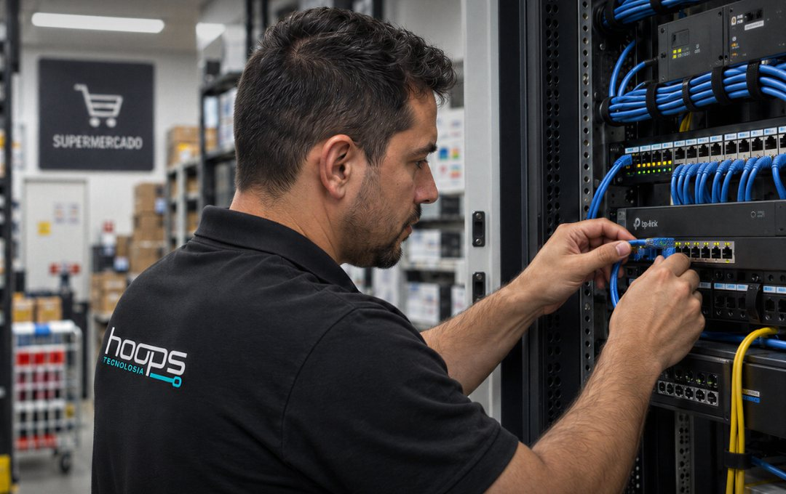
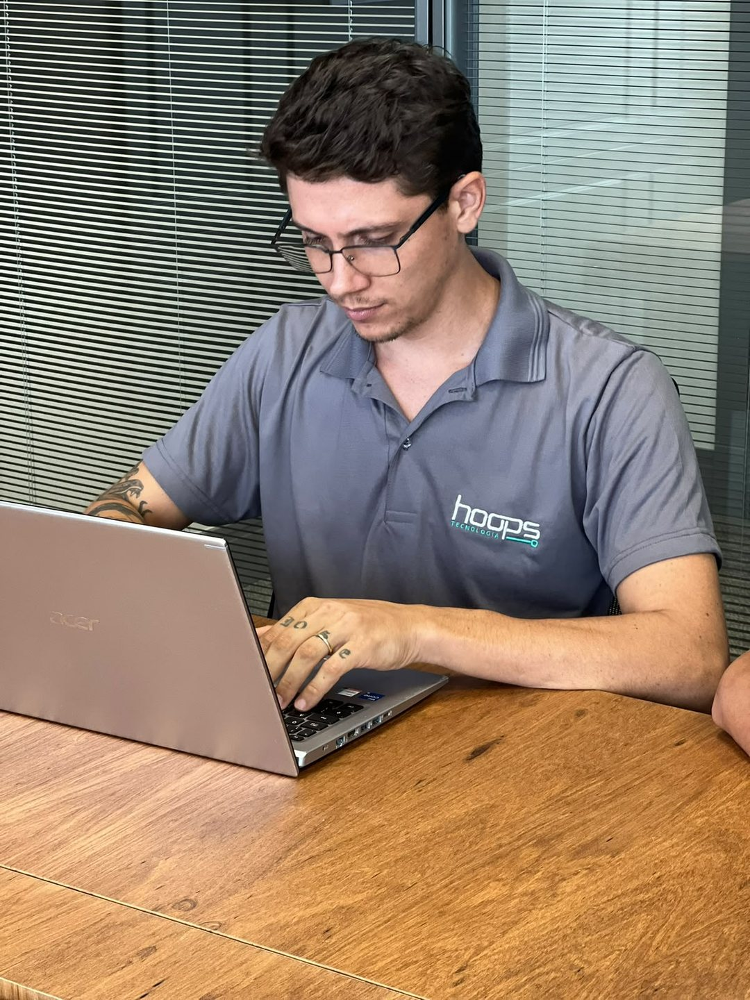
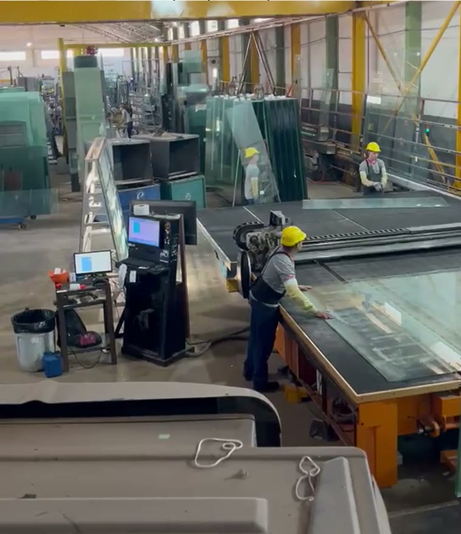
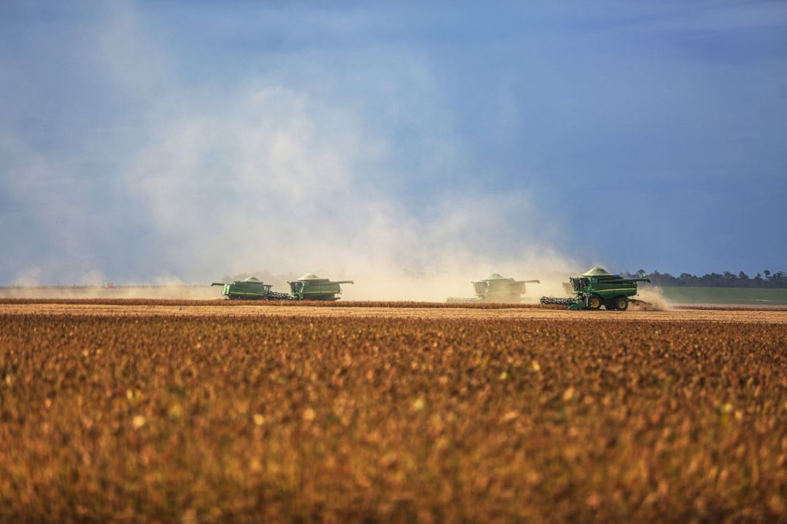

Segurança de perímetro
Firewall Blockbit
Segurança de perímetro, controle de acesso e proteção da rede da sua empresa.
- Regras de acesso à internet e à rede
- Proteção do perímetro contra acessos indevidos
- Acesso remoto seguro
InícioSoluções
A Hoops não é apenas suporte técnico. Cuidamos da rede, dos servidores, da proteção e dos dados da sua empresa, com tecnologias corporativas e uma equipe próxima.
A base de tudo
Monitoramento dos equipamentos e serviços de TI, com identificação de alertas, acompanhamento do ambiente e atuação conforme o plano contratado.
Equipamentos e serviços acompanhados para apontar o que foge do normal.
Visão do estado da rede, dos servidores, do backup e da proteção.
O que é tratado, e quando, fica definido na proposta da sua empresa.
Frentes de solução
Cada frente pode ser contratada conforme a necessidade da sua empresa. O diagnóstico mostra por onde começar.
Segurança de perímetro, controle de acesso e proteção da rede da sua empresa.
Proteção de estações e servidores contra ameaças, com gestão centralizada.
Gestão de backup corporativo com Acronis, com acompanhamento das rotinas e planejamento de recuperação dos dados em caso de incidentes.
E-mail corporativo, SharePoint, OneDrive e gestão do ambiente Microsoft da empresa.
Gestão de servidores físicos e virtuais e da infraestrutura que sustenta os sistemas.
Projetos, administração e manutenção de redes, da sede às unidades.
Gestão de servidores em cloud, infraestrutura e projetos de ambientes corporativos em nuvem.
Como funciona
A Hoops avalia a sua rede e mostra onde estão os riscos.
Você recebe o que precisa ser feito, com a proposta para a sua empresa.
A Hoops coloca o plano em prática e conecta o ambiente ao monitoramento.
O ambiente passa a ser acompanhado, com os alertas tratados conforme o plano contratado.
Segmentos atendidos

Varejo e comércio

Contabilidades e escritórios

Indústria

Agronegócio
Responda algumas perguntas no WhatsApp e agende um diagnóstico gratuito.
Agendar diagnóstico gratuito